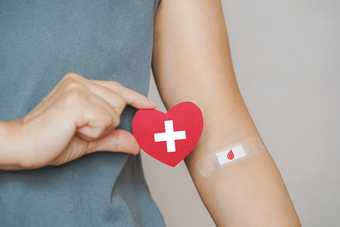
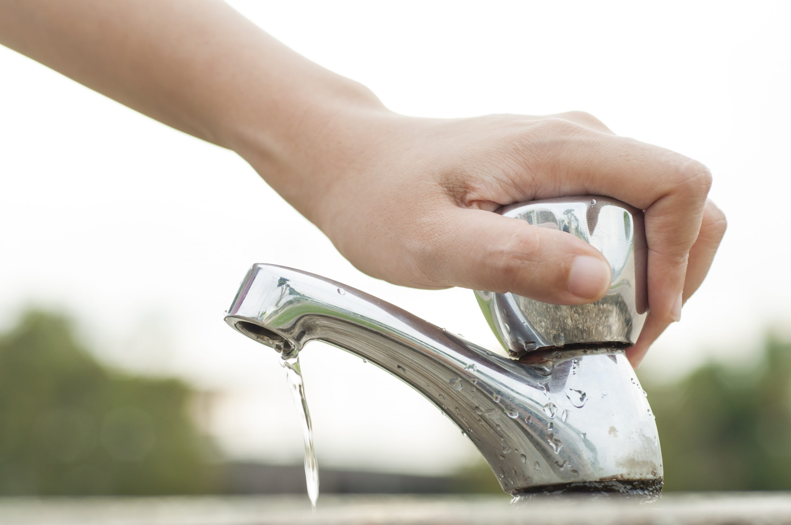

<script>
  document.addEventListener("DOMContentLoaded", function () {
    // Carrega o header
    fetch("include/header.html")
      .then(response => response.text())
      .then(data => {
        document.querySelector("header").innerHTML = data;
      });

    // Carrega o footer
    fetch("include/footer.html")
      .then(response => response.text())
      .then(data => {
        document.querySelector("footer").innerHTML = data;
      });
  });
</script>

<header></header>
<main>
  <p class="ml-2 impacto"><b>Campanhas</b></p>
  <div class="campanhas">
    <h2 style="font-style: bold;">Destaques</h2>
    <p style="margin-right: 50px; font-style: italic;">Aqui, você encontra diversas campanhas que estão
      transformando vidas, protegendo o meio ambiente e
      promovendo justiça social. Escolha uma causa e faça a diferença com a sua doação. Juntos, podemos
      construir um futuro melhor!</p>
    <a style="color: #37836f;" href="https://www.paraquemdoar.com.br/busca"> Veja todas as iniciativas</a>

  </div>

  <div style="margin: 20px 0;">
    <input type="text" id="search" placeholder="Buscar campanha...">
  </div>
  <div id="carouselExampleControls" class="carousel slide" data-ride="carousel">
    <div class="carousel-inner">
      <div class="carousel-item active">
        <div class="cards-wrapper">
          <div class="card">
            
            <div class="card-body">
              <h5 class="card-title">Faça a diferença: participe da coleta seletiva!♻️🌍</h5>
              <p class="card-text">
                Separar o lixo é simples e transforma o futuro. Separe papel, plástico, vidro e metal e ajude a reduzir
                o desperdício e proteger o meio ambiente. Cada gesto conta! Vamos juntos construir um planeta mais limpo
                e sustentável. Comece hoje, faça sua parte! 🌱</p>
              <a href="https://fome.benfeitoria.com/?utm_medium=referral&referer=https%3A%2F%2Fparaquemdoar.com.br&utm_source=praquemdoar&ref=pqd"
                class="btn" style="background-color: #37836f; border-color: #37836f; color: white;">Conheça a
                iniciativa</a>
            </div>
          </div>
          <div class="card">
            
            <div class="card-body">
              <h5 class="card-title">Doe Sangue, Salve Vidas! ❤️</h5>
              <p class="card-text mb-6">Uma simples atitude pode transformar o destino de alguém. Doar sangue é rápido,
                seguro e faz toda a diferença. Seja um herói na vida de quem precisa. Doe sangue e espalhe esperança! 🩸
              </p>
              <a href="https://fome.benfeitoria.com/?utm_medium=referral&referer=https%3A%2F%2Fparaquemdoar.com.br&utm_source=praquemdoar&ref=pqd"
                class="btn" style="background-color: #37836f; border-color: #37836f; color: white;">Conheça a
                iniciativa</a>
            </div>
          </div>
          <div class="card d-none d-md-block">
            
            <div class="card-body">
              <h5 class="card-title">Adote, Não Compre! 🐾</h5>
              <p class="card-text mb-4">Milhares de animais esperam por um lar amoroso. Adotar é dar uma segunda chance
                para um bichinho que só quer carinho e proteção. Faça uma diferença real na vida de um pet. Adote e seja
                o motivo de um rabinho feliz! 🐶❤️</p>
              <a href="https://fome.benfeitoria.com/?utm_medium=referral&referer=https%3A%2F%2Fparaquemdoar.com.br&utm_source=praquemdoar&ref=pqd"
                class="btn" style="background-color: #37836f; border-color: #37836f; color: white;">Conheça a
                iniciativa</a>
            </div>
          </div>
          <div class="card d-none d-md-block">
            
            <div class="card-body">
              <h5 class="card-title">Desperdício Zero: Valorize Cada Gota! 💧</h5>
              <p class="card-text">A água é um recurso precioso que não pode ser desperdiçado. Pequenas atitudes diárias
                fazem uma grande diferença. Feche a torneira, conserte vazamentos, reutilize a água. Juntos, podemos
                garantir um futuro com água para todos! 🌎💦</p>
              <a href="https://fome.benfeitoria.com/?utm_medium=referral&referer=https%3A%2F%2Fparaquemdoar.com.br&utm_source=praquemdoar&ref=pqd"
                class="btn" style="background-color: #37836f; border-color: #37836f; color: white;">Conheça a
                iniciativa</a>
            </div>
          </div>
        </div>
      </div>
    </div>
  </div>
</main>

<script>

  document.getElementById('search').addEventListener('input', function () {
    var searchQuery = this.value.toLowerCase();
    var cards = document.querySelectorAll('.card');

    cards.forEach(function (card) {
      var titulo = card.querySelector('.card-title').innerText.toLowerCase();

      if (titulo.includes(searchQuery)) {
        card.style.display = 'block'; 
      } else {
        card.style.display = 'none';
      }
    });
  });
</script>

<footer></footer>